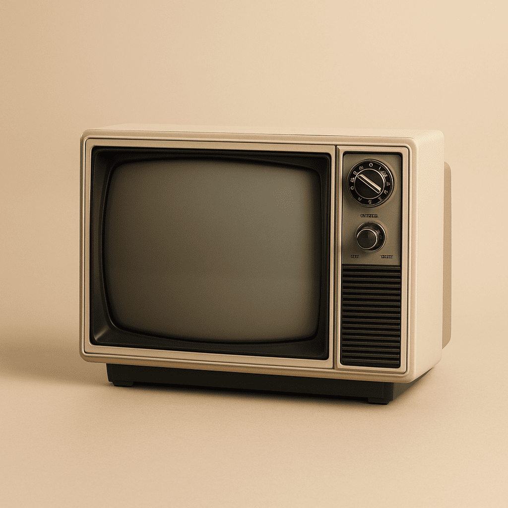
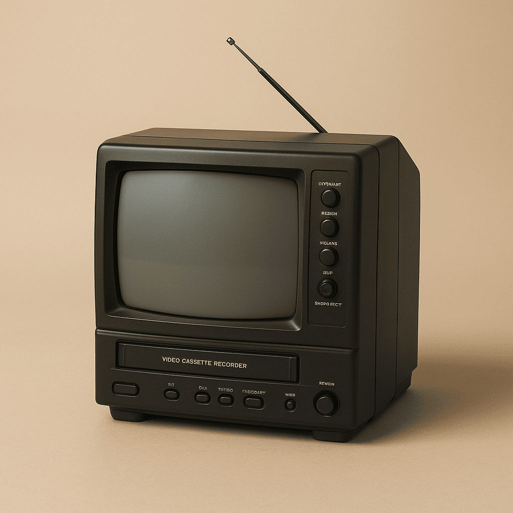
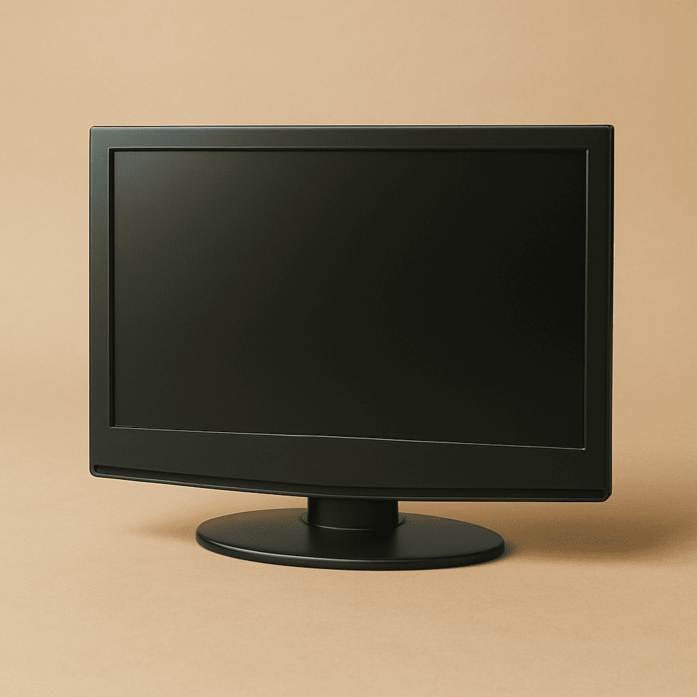

- E.T. El Extraterrestre (1982)
- Los Cazafantasmas (1984)
- Regreso al Futuro (1985)
- Los Goonies (1985)
- El Club de los Cinco (1985)

- Parque Jurásico (1993)
- Titanic (1997)
- Forrest Gump (1994)
- Matrix (1999)
- El Rey León (1994)

- El Señor de los Anillos: La Comunidad del Anillo (2001)
- Harry Potter y la Piedra Filosofal (2001)
- Spider-Man (2002)
- El Código Da Vinci (2006)
- Cisne Negro (2010)

↑